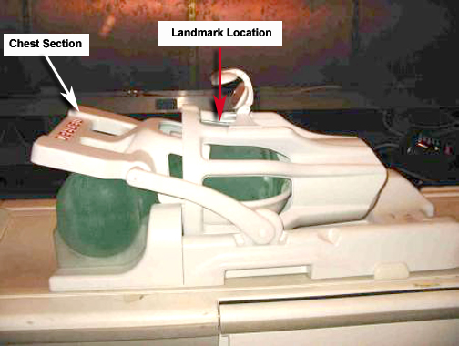

Operating Documentation
Direction 5500113, Rev# 3
Discovery MR450 1.5T Service Methods
Module Version 8.0, Version Date 12/7/09
Operating Documentation |
| Required Persons | Preliminary Reqs | Procedure | Finalization |
|---|---|---|---|
| 1 | Not Applicable | 15 mins | Not Applicable |
Follow this process to prepare for the automated SNR test using the 1.5T NV Array by Medrad (M3087JJ).
| Item | Qty | Effectivity | Part# | Manufacturer | |
|---|---|---|---|---|---|
| Phantom and positioner kit | 1 | - | 5117092-6 | - | |
| Condition | Reference | Effectivity |
|---|
Position the coil on the table.
Place the positioner and phantom in the coil. Do not use any pads when running the SNR test.
Press the chest section down till resting on phantom. See Illustration 1.
Illustration 1: Coil Loaded with Phantoms for SNR Test

Slide the head section of the coil all the way in the inferior direction, till it locks in place. See Illustration 1.
Landmark on the coil crosshairs on the top part of the head section. See Illustration 1.
Perform the MCQA Test if available, otherwise perform the Surface Coils SNR Test.
No finalization steps.